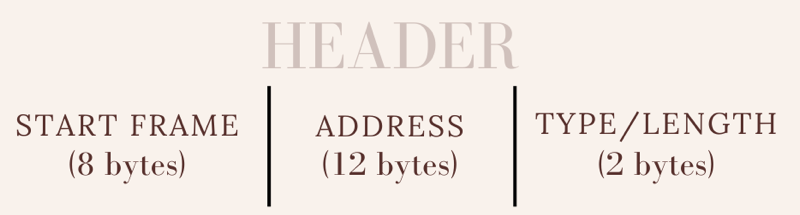
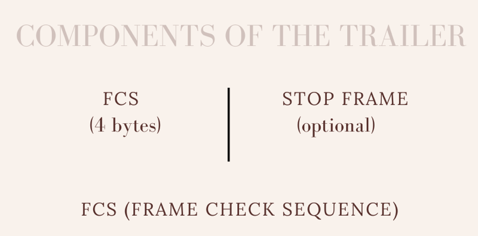

Overview
The Data Link Layer is the second layer in the OSI Model. The OSI describes the levels of systems that computers use to communicate. This aids the sharing of data between two devices, however these devices must be on the same network.
It breaks the packets of data from the Network Layer into peices called "Frames" It is also responsible for flow and error control in the communication between devices on the same network.
Flow Error: "a technique that generally observes the proper flow of data from sender to receiver. It is very essential because it is possible for sender to transmit data or information at very fast rate and hence receiver can receive this information and process it."
Error Control: "Error control is basically process in data link layer of detecting or identifying and re-transmitting data frames that might be lost or corrupted during transmission"

Sublayers
Logical Link Control Layer: Prepares data for transmission. So it controls synchronization, flow control, and checks for errors.
Media Access: Addresses frames and marks beginging and end of frame.
Frame Formatting
Ethernet frames have headers and trailers.
Headers have start frames (signals that a frame is coming), an address field (destination and source address) and information about data type and frame length.
Trailers have a frame check sequence and an optional stop frame.


Sources
Video
Flow Control
Error Control
OSI Model